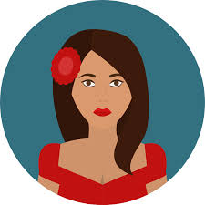

<ion-toolbar color="accent">
        <ion-buttons start>
            <button ion-button icon-only color="primary" start menuToggle>
                <ion-icon name="menu"></ion-icon>
            </button>
        </ion-buttons>
</ion-toolbar>
<ion-title>Perfil</ion-title>
<ion-content>
    <div class="top-profile" text-center>
                
        
        
    </div>
</ion-content>
